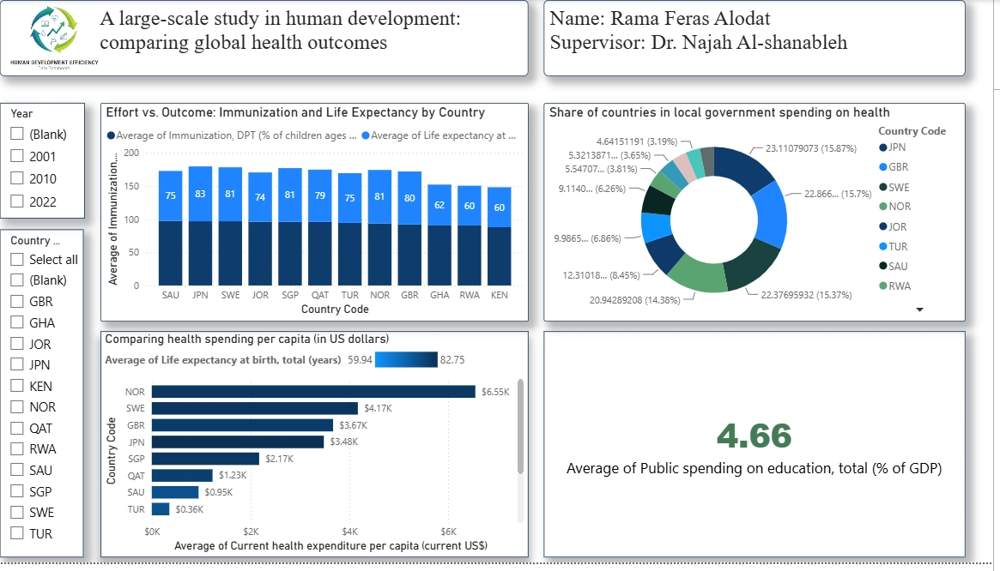

A large-scale study in human development
Comparing global health outcomes, public spending, and access to essential services. Explore both pages of my original Power BI report with its original layout and visuals.

These are previews captured directly from the original report in Power BI Desktop. For working slicers and full interaction, open the downloadable .pbix in Power BI Desktop.
Project repository